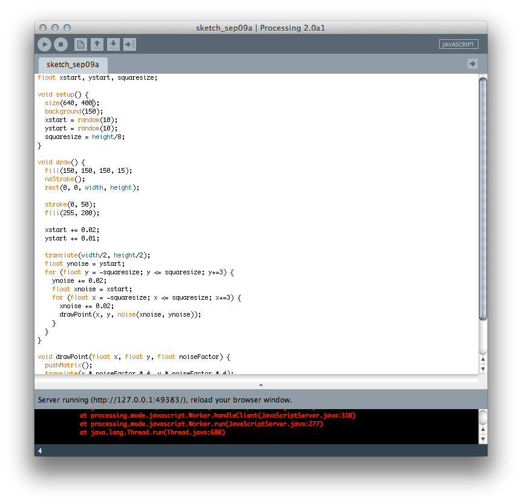

Not knowing Processing or Java, I enrolled in a short class at the now defunct 3rd Ward.
I learned the ins and outs of the Processing interface.

Where you: declare your variables
Where you: setup your Setup
Where you: and create your Draw loop
Again, Processing uses the Java programming language.
Let's take a look and start programming with Processing.
We'll start with
Exercise A Setup (see code on Presentation
blogpost)